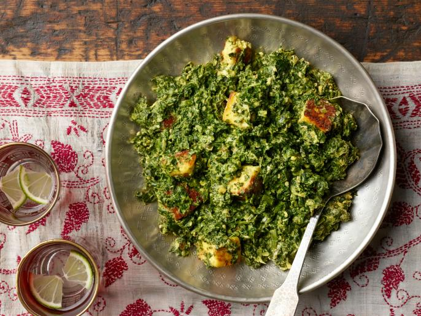

Saag Paneer

So good - nutritious, spicy and delicious!
Aarti Sequeira is my go to for easy, approachable Indian recipes and her take on Saag Paneer one of my all-time favorites. I love making this when it's cold outside and I want something quick and flavorful that isn't pizza or takeout. Her recipes take it easy on the spice, so keep that in mind if you like it hot. I usually end up kicking it up a bit, but they are are a beautiful baseline.
Note: you can buy paneer at any Indian grocer or Costco at an affordable price, or you can make your own (instructions below). I've seen it at Ralph's and Trader Joe's, but it's usually a very small quantity for $$$. We LOVE cheese and dairy in our house and paneer is delicious - I always opt to add more than the recipe calls for.
Ingredients
For the Curry:
- 1 t turmeric
- 1/2 t cayenne
- kosher salt
- 3 T + 1 1/2 T vegetable oil
- 12 oz paneer, cut into 1" cubes
- 16-oz package frozen, chopped spinach
- 1 medium onion, finely chopped
- 1-inch thumb of ginger, peeled and minced
- 4 cloves of garlic, minced
- 1 large serrano chile, finely chopped
- 1/2 t garam masala
- 2 t coriander, ground
- 1 t cumin, ground
- 1/2 C plain yogurt
Optional: For the Paneer
- Cheese cloth
- 8 C Whole Milk
- 1/4 C, plus more as needed, lemon juice
Directions
For the Curry
- In a large bowl, whisk together the turmeric, cayenne, 1 teaspoon salt and 3 tablespoons oil. Gently, drop in the cubes of paneer and gently toss, taking care not to break the cubes if you're using the homemade kind. Let the cubes marinate while you get the rest of your ingredients together and prepped.
- Thaw the spinach in the microwave in a microwave-safe dish, 5 minutes on high, then puree in a food processor until smooth. Alternatively, you can chop it up very finely with your knife.
- Place a large nonstick skillet over medium heat, and add the paneer as the pan warms. In a couple of minutes give the pan a toss; each piece of paneer should be browned on one side. Fry another minute or so, and then remove the paneer from the pan onto a plate.
- Add the remaining 1 1/2 tablespoons oil to the pan. Add the onions, ginger, garlic and chile. Now here's the important part: saute the mixture until it's evenly toffee-coloured, which should take about 15 minutes. Don't skip this step - this is the foundation of the dish! If you feel like the mixture is drying out and burning, add a couple of tablespoons of water.
- Add the garam masala, coriander and cumin. If you haven't already, sprinkle a little water to keep the spices from burning. Cook, stirring often, until the raw scent of the spices cook out, and it all smells a bit more melodious, 3 to 5 minutes.
- Add the spinach and stir well, incorporating the spiced onion mixture into the spinach. Add a little salt and 1/2 cup of water, stir, and cook about 5 minutes with the lid off.
- Turn the heat off. Add the yogurt, a little at a time to keep it from curdling. Once the yogurt is well mixed into the spinach, add the paneer. Turn the heat back on, cover and cook until everything is warmed through, about 5 minutes. Serve.
For the Paneer - makes 12 oz of cheese
- Line a large colander with a large double layer of cheesecloth, and set it in your sink.
- In a large wide pot, bring the milk to a gentle boil over medium heat, stirring frequently to avoid burning the bottom (a nonstick pot works really well for this purpose). This will take a little while so be patient!
- Add the lemon juice and turn the heat down to low. Stirring gently, you should almost immediately see the curds (white milk solids) and whey (the greenish liquid) separate. Don't fret, this is perfect!
- Remove the pot from the heat and carefully pour the contents into the cheesecloth-lined colander. Gently rinse with cool water to get rid of the lemon flavor. At this point, you could squeeze out some of the liquid, and serve with some honey and some nuts, almost like a fresh ricotta!
- Grab the ends of the cheesecloth and twist the ball of cheese to squeeze out the excess whey. Tie the cheesecloth to your kitchen faucet and allow the cheese to drain for about 5 minutes.
- Twisting the ball to compact the cheese into a block, place it on a plate with the twisted part of the cheesecloth on the side (this will ensure your block of cheese is nice and smooth!) and set another plate on top. Weigh the second plate down with cans of beans or a heavy pot. Move to the refrigerator and let it sit about 20 minutes.